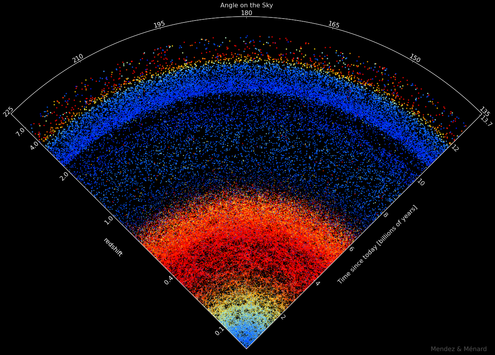

The night sky from a city

Close to a city, we can only see the brightest stars in the night sky.
This view shows a large fraction of sky above your head. Notice the size of the Moon.

Slice Structura
A visualization of the night sky as a function of distance, showing stars, galaxies and quasars all the way to the first flash following the Big Bang
Scroll for explanations
Close to a city, we can only see the brightest stars in the night sky.
This view shows a large fraction of sky above your head. Notice the size of the Moon.
Away from cities, we can see many more stars by eye. In remote locations one can see up to two thousand stars. Our ancestors imagined lines between some of these stars to create constellations and tell stories about them.
For many of these stars, the light took thousands of years to reach us.
If our eyes were bigger or more sensitive, one could see even more stars. With telescopes, millions of stars can be seen. All these stars reside in a gigantic system. This is our galaxy, the Milky Way.
For many of these stars, the light took a million years to reach us.